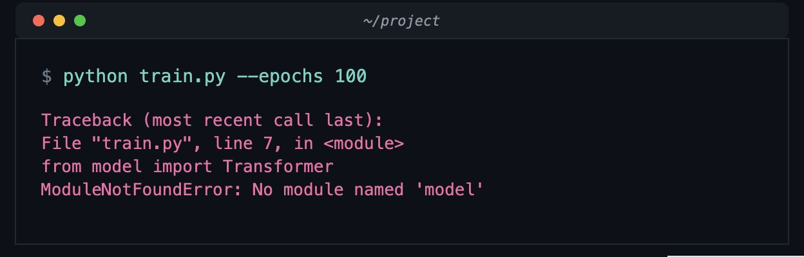
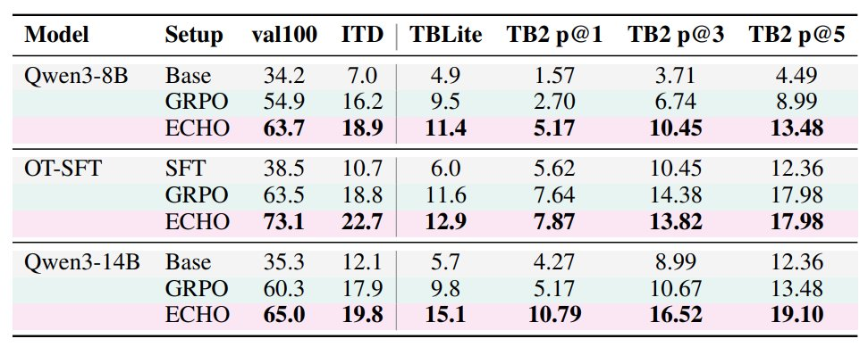
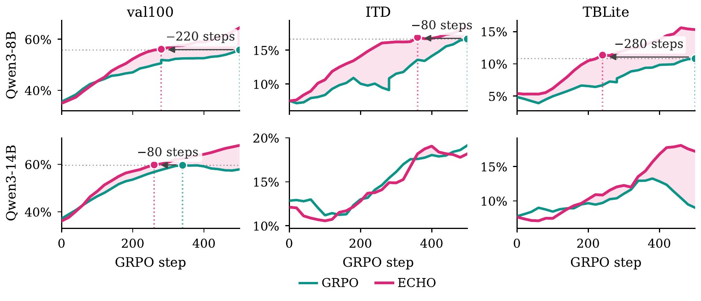
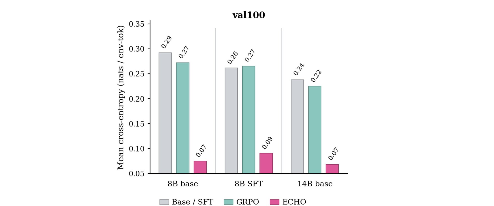

我读了什么，怎么核验
这次材料不是单条推文，而是一个 X Article 入口。原帖只有短链，短链解析到 X 长文；长文再链接论文 PDF 和代码仓库。
原帖：DimitrisPapail/status/2056368948870811746。
用 opencli twitter thread 抓到原帖、回复和作者补充；用 curl 解析短链到
X Article。
长文链接到 echo.pdf。
GitHub blob 页面显示 778KB，raw PDF 已下载并用 pdfinfo 确认为 13 页 PDF，创建时间为 2026-05-19。
X Article 与论文都指向 microsoft/echo-rl。 Grok/mcp-router 搜索能看到该仓库标题和描述，但本地直接打开 GitHub 页面与 raw README 时返回不可读/404。因此本文不对代码实现做已核验判断。
ECHO 的思想是：CLI agent 的 rollout 本来就是 action → terminal observation → action → terminal observation 的序列；
标准 RL 把 observation 只当上下文，ECHO 把 observation 也当预测目标，于是失败轨迹也能贡献关于环境动态的监督。
它到底要解决什么问题
论文关心的是 terminal agents 的多轮强化学习，不是普通 chat model，也不是只做代码补全。
一个 terminal agent 在 Docker/container 里接任务，然后多轮执行命令：读文件、改文件、跑测试、看 traceback、继续修复。训练时常见做法是让模型采样多个 rollout， 最后用 verifier 或单元测试给每条轨迹一个二值奖励：任务做成了就是 1，没做成就是 0。论文使用的是 GRPO 风格的训练：对同一个 prompt 采样多条轨迹，用组内 reward 相对差异产生 advantage， 再更新模型在 action tokens 上的概率。
这里的核心困难是 reward 太稀疏。论文给出一个具体现象：在 Qwen3-8B 设置里，很多任务下少于 15% 的 on-policy rollouts 能成功。
这意味着多数轨迹对 policy gradient 来说要么没有组内 reward 对比，要么只得到粗糙的负信号。但这些失败轨迹并不空：里面有 ls 输出、测试错误、文件内容、日志、traceback、
exit code、grep 结果。这些东西恰好告诉模型“刚才那个命令让环境发生了什么”。
模型会条件化在旧的 terminal 输出上生成下一步行动，所以 observation 会影响未来 action。
terminal 输出 token 不进入 loss，因此模型没有被直接训练去预测“执行这个命令之后会看到什么”。

ECHO 怎么做
方法本身非常简单：同一条 rollout、同一次 forward、两组 token mask、两个 loss。
把多轮交互切成 action tokens 和 observation tokens
一条训练序列长得像：system prompt、用户任务、agent 第一次行动、terminal 第一次返回、agent 第二次行动、terminal 第二次返回，直到结束。
论文用 A 表示 assistant-action token 位置，用 O 表示 environment-observation token 位置。
action tokens 继续用 GRPO
对 agent 自己写出的行动，例如 reasoning block、bash command、task-done signal，仍然用 GRPO 的 clipped policy-gradient loss。 reward 来自最终测试是否通过，二值化为 1 或 0。
observation tokens 加 cross-entropy
terminal 输出是已经发生的 ground truth。ECHO 在这些 token 上加 next-token prediction loss，让模型学习： 在前文包含任务、历史命令和当前命令的条件下，terminal 会输出什么。
排除 harness warning，只训练真实 terminal 输出
论文发现 warning prefix 很快被记住，梯度价值低；真正有用的是 command output，例如文件名、测试失败、错误格式、byte count、traceback。 因此主设置使用 env-only observation targets。
A 是 action token 位置，O' 是真实 terminal-output token 位置，|O| 做按 observation 长度归一化。主实验使用 λ = 0.05。
因为训练 GRPO 时本来就要对完整 transcript 做一次 actor forward，logits 已经在所有位置算出来。 ECHO 只是额外在 observation mask 上 gather log-prob 并 reduce。真正昂贵的 attention/MLP 反传仍然走同一批 activation，不需要额外 rollout、teacher model 或第二次 forward。
但“免费”不是完全没有代价。更准确说法是：相对采样环境交互、额外 teacher、额外模型前向，这个改动的边际成本很低；不过 observation token 也会引入额外 loss 项，
并且会改变梯度方向。因此 λ 不是无脑越大越好。论文 sweep 了 0.001 到 0.2，
发现 0.01-0.05 比较有效；0.1 会让 policy plateau 或退化，0.2 甚至可能让模型偏向制造容易预测但对任务无用的 terminal 输出。
它到底评估了什么
这篇工作评的是 terminal task completion，不是模型能不能口头解释命令。
| 项目 | 论文设置 | 含义 |
|---|---|---|
| 训练任务 | 8870 个 terminal tasks，其中 8770 训练、100 个 in-distribution validation | 任务来自 Endless Terminals、OpenThoughts-Agent-v1-RL，并用修改后的 Endless Terminals pipeline 扩展；保留 GPT-5 至少 16 次尝试中解出过一次的任务。 |
| 交互环境 | Docker + Harbor，最多 16 turns，16k context，每 turn 最多 2048 generated tokens | agent 写 Qwen XML-format bash command，harness 解析并执行，然后把 stdout/stderr/exit code 返回。 |
| 基础模型 | Qwen3-8B、OpenThinker-Agent-v1-SFT、Qwen3-14B | OpenThinker-Agent-v1-SFT 是 Qwen3-8B 用约 15k 条 GLM-4.6 expert terminal-agent demonstrations SFT 得到的起点。 |
| RL 配方 | 16 rollouts/prompt，batch size 16，LR 1e-6，temperature 0.8，500 steps，8 张 B200 | GRPO 和 ECHO 保持同一配方，主要变量是 observation tokens 是否进入 environment cross-entropy。 |
| 指标 | pass@1、pass@3、pass@5 | pass@k 表示每个任务采样 k 次尝试时至少一次通过的概率或比例。内部 eval 用 8 rollouts/task，TB2 用 Terminus 2 harness 做 5 rollouts。 |
“learn world model” 在这里不是训练一个显式 simulator，也不是让模型在 inference 时先模拟未来状态再规划。 论文更保守的 operational claim 是：ECHO 让同一个 policy 更会预测 terminal output，这说明它的隐藏表示吸收了一部分 terminal dynamics。
结果数字怎么读
最有价值的不是某个单点翻倍，而是四类证据互相支撑：任务成功率、terminal 输出预测、SFT 替代性、verifier-free adaptation。

| 起点 | GRPO TB2 pass@1 | ECHO TB2 pass@1 | 解释 |
|---|---|---|---|
| Qwen3-8B | 2.70 | 5.17 | 接近 1.9 倍；绝对值仍低，说明 TB2 对小模型非常难，但 ECHO 显著改善样本效率。 |
| OT-SFT | 7.64 | 7.87 | 提升很小；专家 SFT 起点已经包含大量 terminal interaction prior，ECHO 的边际空间变窄。 |
| Qwen3-14B | 5.17 | 10.79 | 接近 2.1 倍；论文认为大模型可能更能内化可迁移的 terminal dynamics。 |

ECHO 在 val100、ITD、TBLite、TB2 的多数组合中优于 matched GRPO；最吸睛的是 TB2 pass@1 的近似翻倍。
在 Qwen3-32B 生成的 held-out off-policy trajectories 上，ECHO 显著降低 terminal-output cross-entropy，GRPO 几乎不变。
Qwen3-8B 上，ECHO 在内部评测恢复了几乎全部 expert-SFT gap，在 TB2 上恢复约一半。

作者从最强 Qwen3-8B+ECHO checkpoint 出发，关掉 GRPO，只训练 L_env 100 steps。
val100 提升 +3.8pp；过滤干净工具调用后，PyTerm 提升 +10.0pp，ITD 提升 +5.2pp，但 TBLite 下降 -3.9pp。
这说明“只从环境后果学习”不是万能自我改进，只在 rollouts 足够干净、observation 足够 informative 时成立。
回复区真正有价值的讨论
回复区的价值在于把 ECHO 放回 agent RL、world model、auxiliary loss 的历史脉络里。
有人指出，对非 assistant turn 加 NLL loss 作为 regularization 不是全新概念。我的理解是： 形式上确实像，但 ECHO 的 domain-specific 贡献在 terminal agent 的 action-consequence 结构上， 它训练的不是任意用户文本，而是 action 导致的环境反馈。
作者回复说不是单独 autoencoder，而是同一个 model/policy 上的 terminal token cross-entropy。 action model 和 world model 是一个模型，不是两个模块。
作者承认取决于任务种子、复杂度、多样性和 coverage。如果任务只让模型 grep 文本，terminal dynamics 很贫乏，就学不到有用世界模型。
有回复认为 terminal 输出多数细节并不总是有用，应该学更抽象状态。作者同意方向，但提到他们更倾向 compaction，而不是直接做 JEPA。
这些讨论说明 ECHO 的新意不应被夸张成“首次发现 auxiliary prediction”。它更像是把 RL 里长期存在的 forward dynamics / auxiliary prediction 思路， 非常直接地插入到 LLM terminal agent 的 on-policy GRPO 训练环里。这个插入点很干净：不用另训 simulator，不改变 inference 架构，也不需要 expert teacher。
它没有证明什么
这篇文章值得重视，但不要把标题里的 “world model” 读得过强。
它证明模型更会预测观察到的 terminal 文本，不证明模型能显式模拟文件系统、进程状态或长期因果结构。 这是一个 operational world-model claim：更好的压缩/预测 terminal dynamics，而不是完整可规划 simulator。
如果 λ 太大，模型可能偏向制造容易预测的输出，而不是推进任务。论文自己的 sweep 已经观察到 λ=0.1/0.2 可能退化。 所以 ECHO 是一个要调权重的 auxiliary objective，不是纯收益开关。
Python traceback 这类反馈和 action 强绑定，特别适合 ECHO；但更广泛的 terminal tasks 可能需要多步文件/配置/进程状态推断，输出未必足够直接。 这也是 TBLite 在 env-only adaptation 中下降的一个解释。
X Article 和论文指向 microsoft/echo-rl。搜索结果能看到仓库描述，但当前直接访问 GitHub 页面/raw README 失败。
因此本报告只基于 X Article 与 PDF 论文分析，不对开源代码成熟度、可复现脚本、配置完整性做判断。
我认为它真正重要在哪里
这篇工作的 insight 在于重新定义“agent rollout 里什么是监督”。
我觉得 ECHO 最值得记住的不是 TerminalBench-2.0 上 2.70 到 5.17、5.17 到 10.79 的数字，而是一个训练观念： 对 agent 来说，环境返回的文本不是被动上下文，而是行动后果的监督标签。只要世界用 token 反馈，模型就可以用 next-token prediction 从这些反馈里学习一部分 dynamics。
这对未来 agent RL 很关键。现在大家经常在两个极端之间摇摆：要么模仿 expert trajectories，要么等待稀疏 verifier reward。 ECHO 插入了第三种信号：不告诉你“这步好不好”，但告诉你“这步真实造成了什么”。这类信号本身不直接等于策略优化，却能改变模型的 representation 和 action prior， 让后续 policy optimization 更容易。
但我会保守看它的外推。terminal 是一个特别适合 ECHO 的环境，因为返回文本结构化、真实、和 action 因果相关：命令错了就有错误，测试挂了就有 traceback，文件存在就能列出来。 如果迁移到 browser agents、GUI agents、用户对话或多工具系统，环境反馈可能更含噪、更延迟、更偏偏好表达。此时原始 observation tokens 未必是好 target， 可能需要 summary、state abstraction、trajectory filtering 或 credit assignment 改造。
ECHO 不是“终结 expert SFT / verifier reward”的方法，而是一个很有可能成为 agent RL trainer 标配的低成本辅助项。 它的强度取决于三件事：环境反馈是否信息密集、rollout 是否干净、loss 权重是否不压倒策略目标。 如果这三件事成立，它确实把原本被 mask 掉的一大块监督找回来了。
关键命令和证据
下面是本报告使用的核心获取与校验命令摘要。
opencli list -f yaml | rg -i "twitter|x.com"
opencli twitter --help
opencli twitter thread --help
opencli twitter thread "https://x.com/DimitrisPapail/status/2056368948870811746" --limit 80 -f json --trace retain-on-failure
curl -Ls -o /dev/null -w '%{url_effective}\n%{http_code}\n' "https://t.co/n10GwfKYuY"
opencli web read --url "https://x.com/i/article/2056344151235387392" --stdout true --download-images false --wait 5 -f json --trace retain-on-failure
curl -L "https://raw.githubusercontent.com/anadim/anadim.github.io/master/papers/echo.pdf" -o "/tmp/echo-paper.pdf"
pdfinfo "/tmp/echo-paper.pdf"
pdftotext -layout "/tmp/echo-paper.pdf" "/tmp/echo-paper.txt"本地 HTML 生成日期：2026-05-20。主要来源：X Article、论文 PDF、OpenCLI 抓取的回复区。代码仓库内容未直接读取成功，报告中已明确标注该边界。